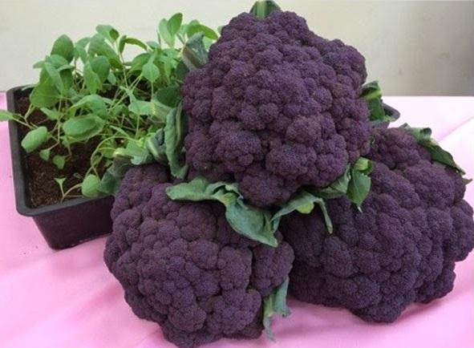
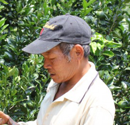

首頁
農產品
五穀雜糧
蔬菜
畜產/水產
水果
手製品
農友列表
北部
中部
南部
東部
外島
關於農家
農友登記
登入
管理農園
登出
農產品資訊

紫色花椰菜
蔬菜
每公斤25元
規格
一公斤，紙箱裝
運送方式
白狗宅急便，200元
付費方式
貨到付款
立刻購買
關於農產品
農友

花椰菜花園
王大明
農產品敘述
一般市面上看到的花椰菜，不是白色的就是綠色的。我們花了5年時間培育彩色花椰菜，比一般的花椰菜還大，而且營養價值高。新品種的花椰菜，可以入鍋快炒也可以開水川燙，除了可以食用之外，新春期間擺設在家裡面，也十分討喜。
 農產品資訊
農產品資訊